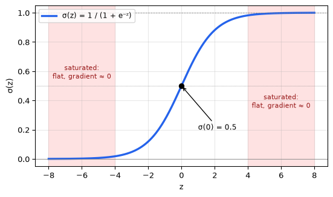
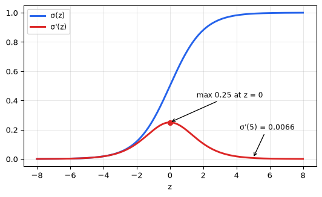
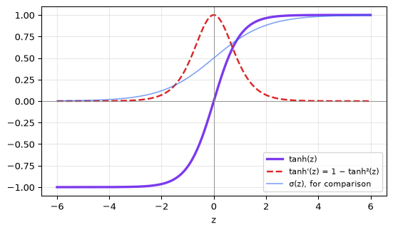
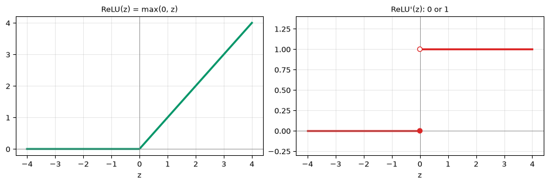
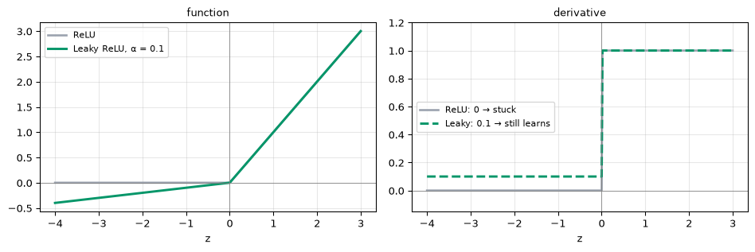
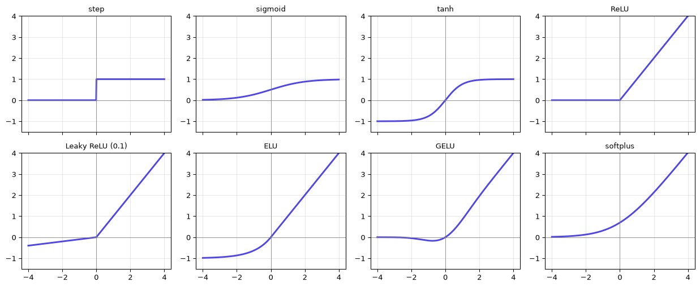
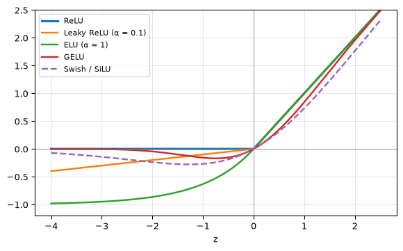
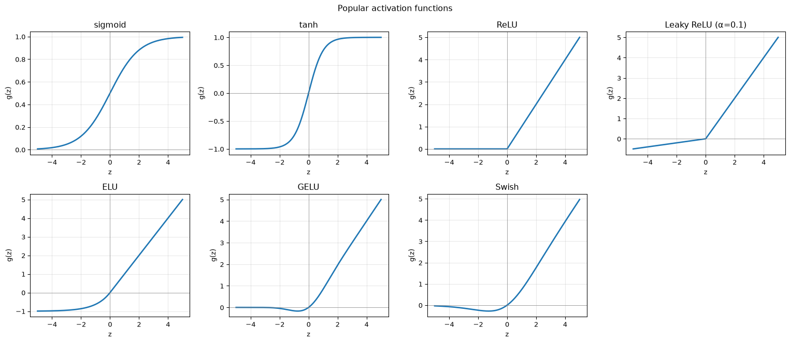
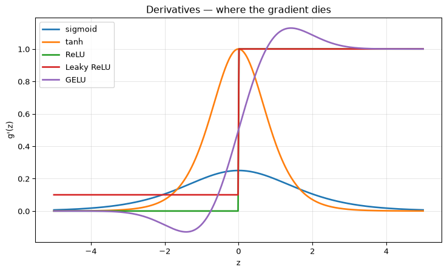

Activation Functions
The squashing function every neuron applies. Historically sigmoid; today mostly ReLU and its variants. This note covers what each one is, where it saturates, why it dies, and how to pick.
01 What an activation function is and why we need one
The role in one line
Given a neuron's pre-activation z = \mathbf{w} \cdot \mathbf{x} + b, the activation function g maps it to the neuron's output:
Every neuron has one. The choice of g shapes what the network can learn and how well it trains.
What makes a good activation function
Four properties to look for:
- Non-linear. Otherwise depth collapses (see note 03).
- Differentiable (almost everywhere) — we need gradients for backpropagation.
- Doesn't saturate too easily. A saturated neuron has g'(z) \approx 0, killing the gradient.
- Cheap to compute. Multiplied billions of times per training step.
Every activation is a compromise among these.
02 Sigmoid

Python code for this figure
import numpy as np
import matplotlib.pyplot as plt
z = np.linspace(-8, 8, 400); s = 1 / (1 + np.exp(-z))
fig, ax = plt.subplots(figsize=(6.5, 3.6))
ax.axvspan(-8, -4, color="#fee2e2"); ax.axvspan(4, 8, color="#fee2e2")
ax.plot(z, s, color="#2563eb", lw=2.5, label="σ(z) = 1 / (1 + e⁻ᶻ)")
ax.axhline(0, color="gray", lw=0.6); ax.axhline(1, color="gray", lw=0.6, ls="--"); ax.axhline(0.5, color="gray", lw=0.6, ls=":")
ax.text(-6, 0.55, "saturated:\nflat, gradient ≈ 0", ha="center", fontsize=8.5, color="#991b1b")
ax.text(6, 0.35, "saturated:\nflat, gradient ≈ 0", ha="center", fontsize=8.5, color="#991b1b")
ax.scatter([0], [0.5], color="k", zorder=3); ax.annotate("σ(0) = 0.5", (0, 0.5), (1.0, 0.2), arrowprops=dict(arrowstyle="->"), fontsize=9)
ax.set_xlabel("z"); ax.set_ylabel("σ(z)"); ax.legend(loc="upper left", fontsize=9); ax.grid(alpha=0.3)
plt.show()Definition
Output range: (0, 1). Smooth, monotonic, S-shaped.
Historically the default choice — invented before deep learning, appears in logistic regression.
Derivative

Python code for this figure
import numpy as np
import matplotlib.pyplot as plt
z = np.linspace(-8, 8, 400); s = 1 / (1 + np.exp(-z)); ds = s * (1 - s)
fig, ax = plt.subplots(figsize=(6.5, 3.6))
ax.plot(z, s, color="#2563eb", lw=2.2, label="σ(z)")
ax.plot(z, ds, color="#dc2626", lw=2.2, label="σ'(z)")
ax.scatter([0], [0.25], color="#dc2626", zorder=3); ax.annotate("max 0.25 at z = 0", (0, 0.25), (1.6, 0.42), arrowprops=dict(arrowstyle="->"), fontsize=9)
ax.annotate(f"σ'(5) = {0.25 * (1 - np.tanh(2.5) ** 2):.4f}", (5, 0.0066), (4.2, 0.2), arrowprops=dict(arrowstyle="->"), fontsize=9)
ax.set_xlabel("z"); ax.legend(fontsize=9); ax.grid(alpha=0.3)
plt.show()Convenient — you can compute it from the forward-pass output without redoing the exponential.
The problems
- Saturates on both sides. For |z| > 5, \sigma'(z) \approx 0. Gradient dies. In a deep network the products of these small gradients vanish → vanishing gradient problem.
- Not zero-centred. Outputs are always positive → downstream gradients all have the same sign → zig-zagging updates.
- Expensive. Exponentials aren't free.
Where sigmoid is still used
- Binary classification output layer — outputs a probability directly.
- Gates in LSTMs and GRUs — where "how much to pass through" is naturally a [0, 1] number.
Rarely used in hidden layers of modern deep networks.
03 Tanh

Python code for this figure
import numpy as np
import matplotlib.pyplot as plt
z = np.linspace(-6, 6, 400)
fig, ax = plt.subplots(figsize=(6.5, 3.6))
ax.plot(z, np.tanh(z), color="#7c3aed", lw=2.5, label="tanh(z)")
ax.plot(z, 1 - np.tanh(z) ** 2, color="#dc2626", lw=1.8, ls="--", label="tanh'(z) = 1 − tanh²(z)")
ax.plot(z, 1 / (1 + np.exp(-z)), color="#2563eb", lw=1.2, alpha=0.6, label="σ(z), for comparison")
ax.axhline(0, color="gray", lw=0.6); ax.axvline(0, color="gray", lw=0.6)
ax.set_xlabel("z"); ax.legend(fontsize=8.5, loc="lower right"); ax.grid(alpha=0.3)
plt.show()Definition
Output range: (-1, 1). Smooth, S-shaped, zero-centred.
Derivative
Peaks at 1 (at z=0) — steeper gradient than sigmoid.
Improvements over sigmoid
- Zero-centred. Fixes the sign-alignment problem — activations can be positive or negative, so downstream gradients aren't forced in one direction.
- Steeper gradient near zero — trains faster than sigmoid in the same regime.
Still suffers from
- Saturation. Same shape as sigmoid, so |z| > 3 still zeros out the gradient.
Where tanh is used
- Hidden layers of shallow networks and RNNs.
- Anywhere you want zero-centred smooth outputs.
- Rarely in deep CNNs — ReLU has beaten it since 2012.
04 ReLU
The activation that made deep learning practical.

Python code for this figure
import numpy as np
import matplotlib.pyplot as plt
z = np.linspace(-4, 4, 401)
fig, axes = plt.subplots(1, 2, figsize=(10, 3.4))
axes[0].plot(z, np.maximum(0, z), color="#059669", lw=2.5); axes[0].set_title("ReLU(z) = max(0, z)", fontsize=10)
axes[1].plot(z[z < 0], 0 * z[z < 0], color="#dc2626", lw=2.5); axes[1].plot(z[z > 0], 0 * z[z > 0] + 1, color="#dc2626", lw=2.5)
axes[1].scatter([0, 0], [0, 1], facecolors=["#dc2626", "white"], edgecolors="#dc2626", zorder=3)
axes[1].set_title("ReLU'(z): 0 or 1", fontsize=10); axes[1].set_ylim(-0.3, 1.4)
for ax in axes:
ax.axhline(0, color="gray", lw=0.6); ax.axvline(0, color="gray", lw=0.6); ax.grid(alpha=0.3); ax.set_xlabel("z")
plt.tight_layout(); plt.show()Definition
Zero for negative inputs, identity for positive.
Derivative
(At exactly z = 0 we pick 0 by convention — it doesn't matter in practice, gradients rarely hit an exact zero.)
Why it's so good
- No saturation on the positive side. Gradient = 1 for all positive inputs. No vanishing.
- Extremely cheap. Just a max operation, no exponentials.
- Sparse activations. Roughly half of neurons output zero for any given input. Sparse gradients, faster training.
- Fixes vanishing gradients in deep networks — the reason CNNs got deep in 2012.
The catch
- Not zero-centred. Outputs are always ≥ 0.
- Not differentiable at zero — negligible in practice.
- Dying ReLU — the big one, and the subject of the next section.
05 The dying ReLU problem — and how to fix it
Half of ReLU's domain has zero gradient. If a neuron gets stuck there, it stops learning.

Python code for this figure
import numpy as np
import matplotlib.pyplot as plt
z = np.linspace(-4, 3, 400); a = 0.1
fig, axes = plt.subplots(1, 2, figsize=(10, 3.4))
axes[0].plot(z, np.maximum(0, z), color="#9ca3af", lw=2, label="ReLU")
axes[0].plot(z, np.where(z > 0, z, a * z), color="#059669", lw=2.2, label=f"Leaky ReLU, α = {a}")
axes[0].set_title("function", fontsize=10); axes[0].legend(fontsize=8.5)
axes[1].plot(z, (z > 0).astype(float), color="#9ca3af", lw=2, label="ReLU: 0 → stuck")
axes[1].plot(z, np.where(z > 0, 1.0, a), color="#059669", lw=2.2, ls="--", label=f"Leaky: {a} → still learns")
axes[1].set_title("derivative", fontsize=10); axes[1].legend(fontsize=8.5, loc="center left"); axes[1].set_ylim(-0.15, 1.2)
for ax in axes:
ax.axhline(0, color="gray", lw=0.6); ax.axvline(0, color="gray", lw=0.6); ax.grid(alpha=0.3); ax.set_xlabel("z")
plt.tight_layout(); plt.show()The mechanism
Suppose a big gradient update pushes a neuron's weights so that its pre-activation is always negative for every training input. Then:
- Forward pass: output = 0 for every input.
- Backward pass: gradient = 0 for every input (ReLU derivative is 0 for negatives).
- Weight update: no change. The neuron is stuck at 0 forever.
That neuron is "dead". It contributes nothing to the network.
When it happens
- Learning rate too high — updates overshoot.
- Poor initialisation — weights start in a range that pushes activations deep negative.
- Bad data preprocessing — inputs not centred or scaled.
The fix — allow a small slope for negatives
Leaky ReLU:
with \alpha typically 0.01 or 0.2. The negative side now has a non-zero gradient, so dead neurons can revive.
Parametric ReLU (PReLU): \alpha is learned per-neuron.
ELU, GELU, Swish: smooth alternatives with the same "small negative slope" idea (next section).
How common is dying ReLU in practice?
With modern initialisation (Kaiming/He), sensible learning rates, and batch normalisation, it's much less common. But it's the reason ReLU variants exist — safety net for pathological training runs.
06 Modern activations — Leaky ReLU, ELU, GELU, Swish

Python code for this figure
import numpy as np
import matplotlib.pyplot as plt
from scipy.special import erf
z = np.linspace(-4, 4, 400)
sig = 1 / (1 + np.exp(-z))
fns = {"step": (z >= 0).astype(float), "sigmoid": sig, "tanh": np.tanh(z), "ReLU": np.maximum(0, z),
"Leaky ReLU (0.1)": np.where(z > 0, z, 0.1 * z), "ELU": np.where(z > 0, z, np.exp(z) - 1),
"GELU": 0.5 * z * (1 + erf(z / np.sqrt(2))), "softplus": np.log1p(np.exp(z))}
fig, axes = plt.subplots(2, 4, figsize=(13, 5.4), sharex=True)
for ax, (name, v) in zip(axes.ravel(), fns.items()):
ax.plot(z, v, lw=2.2, color="#4f46e5")
ax.axhline(0, color="gray", lw=0.6); ax.axvline(0, color="gray", lw=0.6); ax.grid(alpha=0.3)
ax.set_title(name, fontsize=10); ax.set_ylim(-1.5, 4)
plt.tight_layout(); plt.show()Leaky ReLU
Simplest fix for dying ReLU. Almost always safe to use in place of vanilla ReLU.
ELU (Exponential Linear Unit)
Smooth curve on the negative side; it levels off at -\alpha. Because it can go negative, the mean activation sits closer to zero than ReLU's. Slightly more expensive than Leaky ReLU.
GELU (Gaussian Error Linear Unit)
where \Phi is the Gaussian CDF. Smooth, differentiable everywhere. The activation used inside GPT and BERT. In practice it trains slightly better than ReLU in transformers.
Swish / SiLU
Smooth, self-gated. Very similar to GELU in practice. Used inside EfficientNet.
Comparison snapshot

Python code for this figure
import numpy as np
import matplotlib.pyplot as plt
from scipy.special import erf
z = np.linspace(-4, 2.5, 400)
fig, ax = plt.subplots(figsize=(7, 4))
ax.plot(z, np.maximum(0, z), lw=2.4, label="ReLU")
ax.plot(z, np.where(z > 0, z, 0.1 * z), lw=1.8, label="Leaky ReLU (α = 0.1)")
ax.plot(z, np.where(z > 0, z, np.exp(z) - 1), lw=1.8, label="ELU (α = 1)")
ax.plot(z, 0.5 * z * (1 + erf(z / np.sqrt(2))), lw=1.8, label="GELU")
ax.plot(z, z / (1 + np.exp(-z)), lw=1.8, ls="--", label="Swish / SiLU")
ax.axhline(0, color="gray", lw=0.6); ax.axvline(0, color="gray", lw=0.6)
ax.set_ylim(-1.2, 2.5); ax.set_xlabel("z"); ax.legend(fontsize=8.5); ax.grid(alpha=0.3)
plt.show()| Activation | Range | Smooth? | Dying? | Where used |
|---|---|---|---|---|
| ReLU | [0, \infty) | No (at 0) | Yes | CNNs, general default |
| Leaky ReLU | (-\infty, \infty) | No (at 0) | No | Safer default |
| ELU | (-\alpha, \infty) | Yes | No | Batch-norm-free deep nets |
| GELU | [\approx -0.17, \infty) | Yes | No | Transformers (GPT/BERT) |
| Swish | [\approx -0.28, \infty) | Yes | No | EfficientNet |
07 Softmax (output layer for classification)
Not a hidden-layer activation. Turns a vector of raw scores into a probability distribution.
Definition
For a vector \mathbf{z} = (z_1, z_2, \ldots, z_K) (one score per class):
Properties:
- Every output is in (0, 1).
- Outputs sum to 1 — it's a valid probability distribution.
- Preserves order: the largest input becomes the largest output.
When to use
- Multi-class classification — one class per input, K > 2 classes. Standard output layer.
- Attention mechanisms in transformers — softmax over attention scores gives a "distribution of focus".
For binary classification use sigmoid instead. For multi-label (an input can belong to several classes) use K independent sigmoids, not one softmax.
Numerical trick — subtract the max
exp of a large number overflows. In practice:
Doesn't change the answer but keeps every e^{z_k - \max} in (0, 1]. Every library does this automatically.
Softmax is almost always paired with cross-entropy loss — see note 05.
08 Guide for choosing
The decision table
| Location | Task | Use |
|---|---|---|
| Hidden layer, CNN | Vision | ReLU (or Leaky ReLU) |
| Hidden layer, transformer | Language | GELU |
| Hidden layer, RNN | Sequence | tanh (LSTM/GRU) |
| Hidden layer, small MLP | Anything | ReLU or tanh |
| Output layer, binary classification | sigmoid | |
| Output layer, multi-class classification | softmax | |
| Output layer, multi-label | K independent sigmoids | |
| Output layer, regression | linear (no activation) |
The two heuristics
- When in doubt, ReLU. Fastest, simplest, well-understood. Switch to Leaky ReLU if you see dying neurons.
- Match the paper. If you're reimplementing an architecture, use exactly the activation from the paper (GELU for BERT-style models, ReLU for classic CNNs, tanh in LSTM gates).
Custom activations rarely beat the standard ones by enough to justify the search.
09 Runnable demo
import numpy as np
import matplotlib.pyplot as plt
z = np.linspace(-5, 5, 400)
def sigmoid(z): return 1 / (1 + np.exp(-z))
def tanh(z): return np.tanh(z)
def relu(z): return np.maximum(0, z)
def leaky_relu(z, a=0.1): return np.where(z > 0, z, a * z)
def elu(z, a=1.0): return np.where(z > 0, z, a * (np.exp(z) - 1))
def gelu(z): return 0.5 * z * (1 + np.tanh(np.sqrt(2/np.pi) * (z + 0.044715 * z**3)))
def swish(z): return z * sigmoid(z)
fns = [
('sigmoid', sigmoid),
('tanh', tanh),
('ReLU', relu),
('Leaky ReLU (α=0.1)', leaky_relu),
('ELU', elu),
('GELU', gelu),
('Swish', swish),
]
fig, axes = plt.subplots(2, 4, figsize=(16, 7))
axes = axes.flatten()
for i, (name, fn) in enumerate(fns):
axes[i].plot(z, fn(z), lw=2)
axes[i].axhline(0, color='gray', lw=0.5); axes[i].axvline(0, color='gray', lw=0.5)
axes[i].set_title(name); axes[i].set_xlabel('z'); axes[i].set_ylabel('g(z)')
axes[i].grid(alpha=0.3)
axes[-1].axis('off')
plt.suptitle('Popular activation functions')
plt.tight_layout(); plt.show()
Their derivatives — where each saturates
def d_sigmoid(z): s = sigmoid(z); return s * (1 - s)
def d_tanh(z): return 1 - tanh(z)**2
def d_relu(z): return (z > 0).astype(float)
def d_leaky(z, a=0.1): return np.where(z > 0, 1.0, a)
def d_gelu(z, eps=1e-4): return (gelu(z + eps) - gelu(z - eps)) / (2 * eps) # numerical
fig, ax = plt.subplots(figsize=(9, 5))
for name, dfn in [('sigmoid', d_sigmoid), ('tanh', d_tanh),
('ReLU', d_relu), ('Leaky ReLU', d_leaky), ('GELU', d_gelu)]:
ax.plot(z, dfn(z), label=name, lw=2)
ax.set_xlabel('z'); ax.set_ylabel("g'(z)")
ax.set_title('Derivatives — where the gradient dies')
ax.grid(alpha=0.3); ax.legend()
plt.show()
print("Sigmoid/tanh derivatives are ~0 outside [-3, 3] — vanishing gradients.")
print("ReLU derivative is 0 for all negative inputs — dying ReLU risk.")
print("Leaky ReLU / GELU stay non-zero → gradient can flow.")
Sigmoid/tanh derivatives are ~0 outside [-3, 3] — vanishing gradients. ReLU derivative is 0 for all negative inputs — dying ReLU risk. Leaky ReLU / GELU stay non-zero → gradient can flow.
Softmax on a toy example
def softmax(z):
z = z - z.max() # numerical stability
e = np.exp(z)
return e / e.sum()
logits = np.array([2.0, 1.0, 0.5, -1.0])
probs = softmax(logits)
print(f"logits: {logits}")
print(f"softmax: {probs.round(4)}")
print(f"sum: {probs.sum():.4f} (should be 1.0)")
print(f"argmax stays: logit argmax = {logits.argmax()}, prob argmax = {probs.argmax()}")logits: [ 2. 1. 0.5 -1. ] softmax: [0.6095 0.2242 0.136 0.0303] sum: 1.0000 (should be 1.0) argmax stays: logit argmax = 0, prob argmax = 0